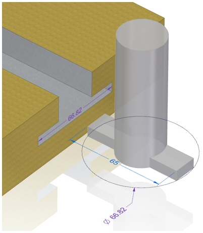
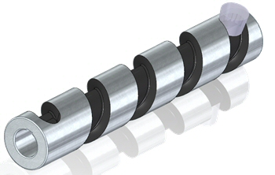
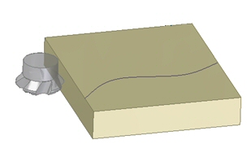
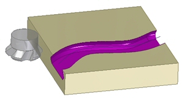
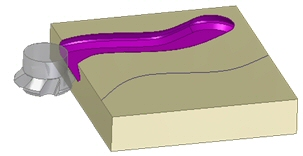
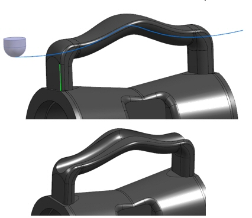
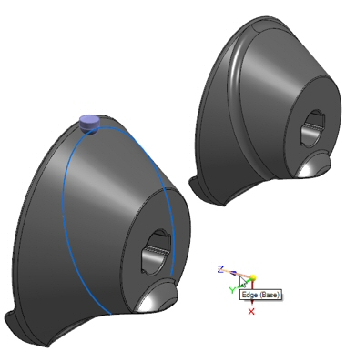
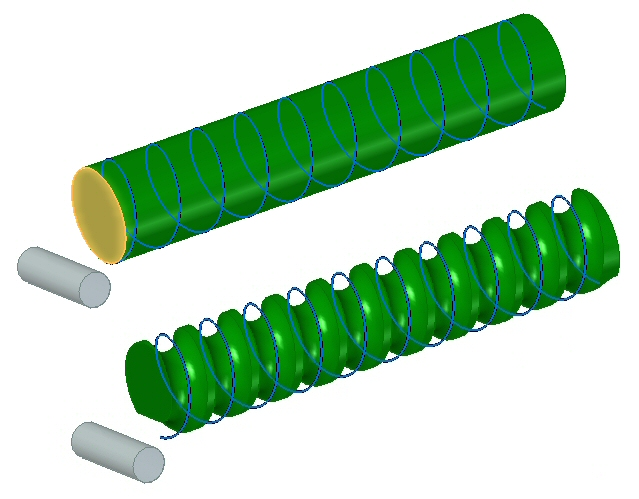

Solid Sweep Cutout command
The Solid Sweep Cutout command  creates a cutout in a solid body by moving a spinning revolved tool body along a
path. The revolved tool body removes volume as it moves along the path.
creates a cutout in a solid body by moving a spinning revolved tool body along a
path. The revolved tool body removes volume as it moves along the path.
Both 2D and 3D paths are valid. Unless the tool is placed on the path or the Place tool on Path option is selected, the path must be tangent and continuous.


Multi-body
Two bodies are required to create a Solid Sweep Cutout. The tool is defined as a separate body. For more information, see Add Body command.
Valid tools:
-
Must be a solid body.
-
The tool axis defines the axis about which to spin the tool body.
-
The cross-section of the spun body obtained by spinning the tool body about the tool axis must form a single connected set of curves.
-
The tool body must not be disjoint, and it must intersect the axis.
Invalid tools:
-
Concave and convex.

-
Containing holes and cutouts.

-
Non-analytic faces created with b-spline geometry.
Path options
Paths are used to control the tool creating the cutout.
Shown below is a tool that is offset from the path.

Options are:
-
Place Tool on Path option selected.

-
Place Tool on Path option deselected.

Cutouts normal to surface
Use the Place Tool Normal to Surface option  on the Solid Sweep command bar to place the sweep tool normal to a surface on the circular or round body while creating
a swept cutout.
on the Solid Sweep command bar to place the sweep tool normal to a surface on the circular or round body while creating
a swept cutout.
With this option selected, the sweep tool follows the path correctly on the circular body, which results in a precise swept cutout.

You should enable this option while working with circular or cylindrical models.
Setting the Axis Lock Direction
If the tool is perpendicular to a 2D path, the Axis Lock Direction is set by default. For 3D paths and 2D paths where the tool axis is not perpendicular to the path, the Axis Lock Direction must be defined. Axis Lock Direction can be defined by the direction of edges, feature axes, coordinate system axes, or planes.
Examples:
-
In the example below, the tool follows a 3D path. The Axis Lock Direction is represented by the edge of the vertical face of the handle.

-
In the example below, the tool follows a 3D path. The Axis Lock Direction is represented by the coordinate axis direction.

-
In the example below, the tool follows a 3D path. The Axis Lock Direction is represented by a planar face of a cylinder.

How do I
Construct a swept protrusion or cutoutConstruct a Solid Sweep Protrusion
Construct a Solid Sweep Cutout
Learn more
Constructing swept featuresLook up more details
Swept Protrusion commandSwept Protrusion command bar
Sweep Options dialog box
Swept Cutout command
Swept Cutout command bar
Solid Sweep Protrusion command
Solid Sweep Cutout command bar